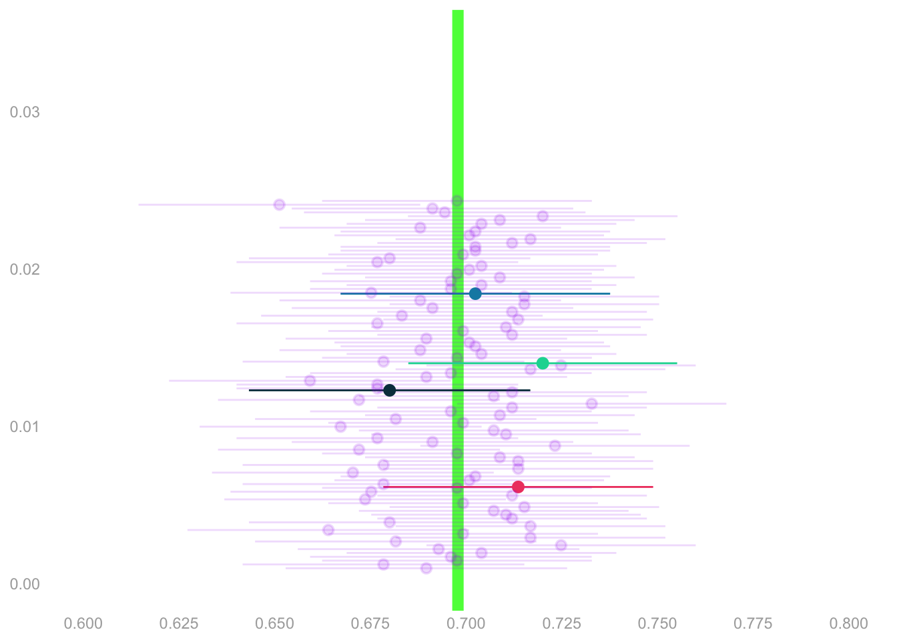
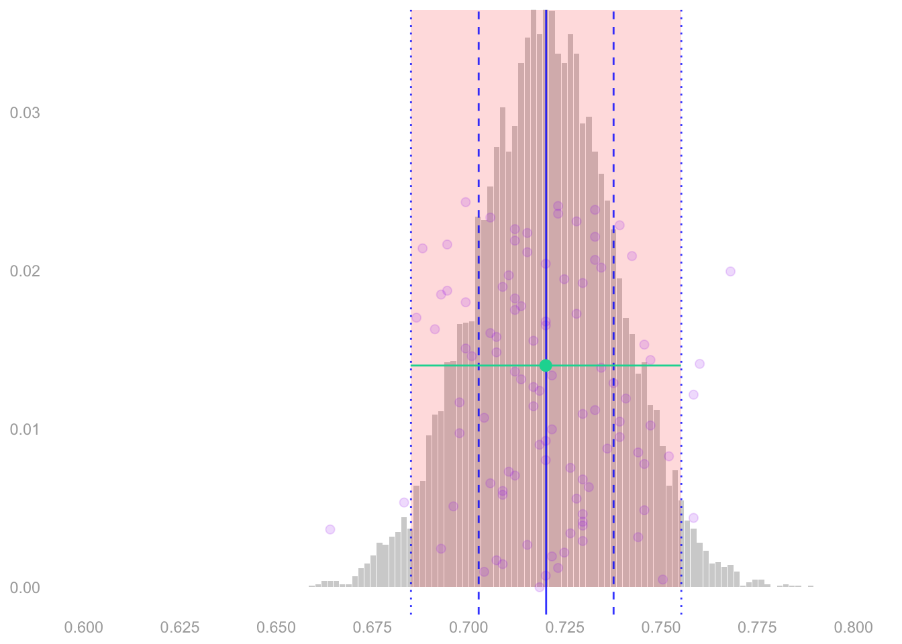
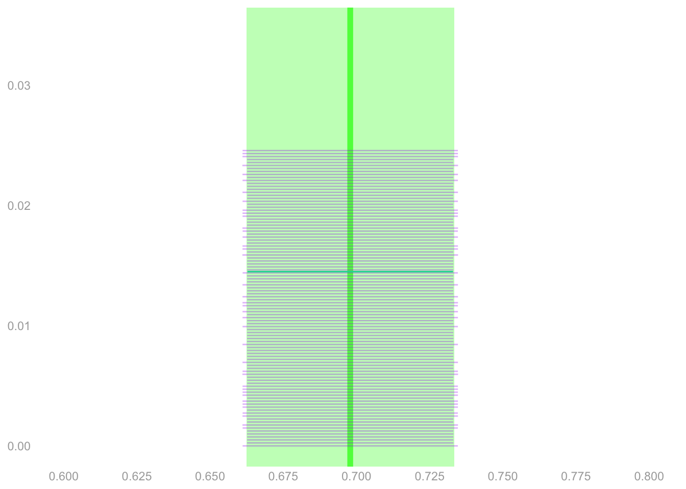

theta.hat = mean(Y)
samples = rbinom(10000, n, theta.hat) / n
interval.width = width(samples, alpha=.05)

To estimate this sampling distribution, you plug your point estimate \(\hat\theta\) into the Binomial formula. \[ \hat P\qty(\sum_{i=1}^n Y_i = s) = \binom{s}{n} \hat\theta^{s} (1-\hat\theta)^{n-s} \qqtext{ estimates } P\qty(\sum_{i=1}^n Y_i = s) = \binom{s}{n} \theta^{s} (1-\theta)^{n-s} \]
To calibrate your interval estimate, you use rbinom to draw 10,000 samples from this estimate of the sampling distribution. Even remembering to divide by \(n\). And use the function width from the Week 1 Homework to find an interval that covers 95% of them.
theta.hat = mean(Y)
samples = rbinom(10000, n, theta.hat) / n
interval.width = width(samples, alpha=.05)You nail it. Your interval covers the estimation target \(\theta\) just like 95% of your competitors’ do.

It’s not just that you’ve widened your interval enough. You’ve widened it almost exactly the right amount. Just like your competitors. Almost as if you all knew how to estimate your estimator’s sampling distribution.